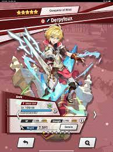
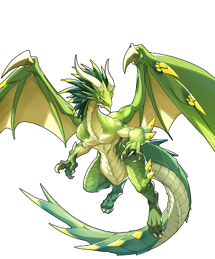

Adventurers
Adventurers are the characters that you play as, and are the ones that everything is equipped to. Choosing the adventurer used is probably the most important choice. Each team can have up to four adventurers, each with their own dragons, wyrmprints and weapons. The adventurers are typically categorized by their weapon and element, but each have unique skills to make them different.
Elements are an attrebute that all adventurers, all dragons anwd most weapons have. Fire, wind and water work in a rock paper scissors fashion, while light and dark each work against enemies of the opposite type. I'd recommend focusing on one adventurer per element as your mains, while giving leftovers to others in that element to form a full team of each. Typically you want your main to be a five star of the weapon you're best at or find the most fun. If you don't have one of that type however, you will likely be able to upgrade an adventurer to five stars.
Upgrading adventurers involves using crystals to increase their level, as well as using elemental orbs to unlock their mana circles. There's also the ability to upgrade the amount of stars a three or four star adventurer has, which also increases their maximum level and mana circles. Some adventurers have had mana spirals added to further increase their power and bring them back into meta. This can only be done with end game materials, but further increases mana circle nodes and the level cap.
Dragons
Dragons allow you to transform into a dragon for a short amount of time during combat, and each come with their own unique skills and abilities. During a battle, your shapeshift meter fills by dealing damage, defeating opponents or through adventurer's abilities. You can hold up to two charges worth of shapeshifting ability. Once shapeshifted, you will transform into the dragon equipped, being able to use their skill, as well as being immune to damage. You are only able to stay as a dragon for a little bit, and getting hit by attacks further decreases the time. After shapeshifting, you will be unable to shapeshift for a few seconds. Another thing to add is that you can't shapeshift when affected by a status debuff.
A dragon's abilities can usually only be used by an adventurer of the same element, so keep in mind to avoid mixing elements when possible. Dragons and adventurers are the only parts of the game that are obtained through gatcha mechanics, meaning you need to use wyrmite in order to obtain them. The game is balanced so that typically any dragon or adventurer of the proper element will be able to clear that element's content, so don't worry if what you get isn't overpowered. Dragons can be upgraded by either using dragonfruit to increase their level, or using extra copies of the dragon to increase their level cap. These extra copies can also be substituted for sunstones, which can be gotten in rare amounts from content like events.
For damage dealing characters you tend to want skill damage or strength buffing abilities, and healers typically want hp buffing abilities. Most of the dragons found have one of those two, but there are some special cases. Some of the other abilities stars with shapeshift prep, which increases the shapeshift meter at the beginning of the fight. There's also buffs to energy, which is typically a buff that acts as a connector to other abilities, but is usually pretty useless. Finally, a dragon could have conditional buffs, which activate upon a certain condition being activated, like low hp, high hp, or a high combo count.